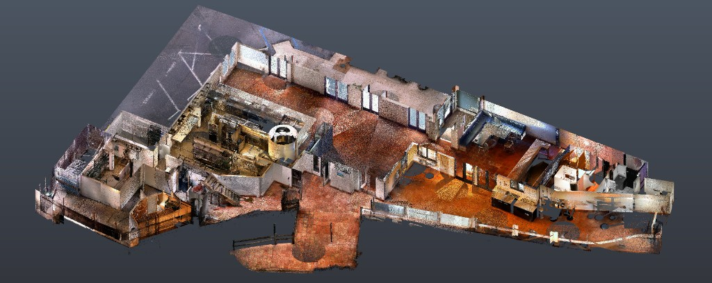

Property Owners
Property Documentation: Maximizing Value Across the Ownership Lifecycle

Building a modern restaurant is a multi-faceted undertaking, requiring operators to balance creating a compelling diner experience with ensuring an efficient Back of House, all while integrating new operational demands like delivery and navigating complex permitting and compliance challenges. To contain the costs of a ground-up build, many restaurateurs opt to renovate spaces previously occupied by other food service tenants. While financially attractive, this strategy introduces significant risk tied to unknown existing conditions, which can quickly negate anticipated savings through unexpected repairs, major delays, and necessary infrastructure upgrades.
Existing conditions documentation is the essential strategic process that addresses this uncertainty by thoroughly assessing and mapping a proposed renovation site's infrastructure before the design phase begins. This process is critical for project success, primarily by de-risking the renovation—it transforms uncertainty into actionable data by clarifying which existing elements are reusable and which infrastructure will pass critical municipal and health inspections. Furthermore, documentation is essential for cost control and efficiency. It provides the basis for accurate budgeting and identifies required infrastructure preparations for complex, heavy new equipment, preventing costly change orders and delays that frequently arise from unforeseen site issues during construction. This proactive approach also ensures installation readiness by clearly outlining the current state of utilities and structural elements, minimizing delays during the crucial equipment installation phase, and guaranteeing compliance assurance by preparing for permitting and licensing challenges upfront.
Existing Conditions Process and Deliverables
Building on the foundation of high-precision 3D scanning, the documentation package translates these physical surveys into high-fidelity digital assets for maximum accuracy and efficiency. Typical deliverables that provide this "single source of truth" for the design and construction team include:
Effective documentation requires a structured and rigorous approach to data collection and analysis. The process begins with the Initial Site Assessment and Data Collection, which involves physical surveys, 3D scanning, and thorough visual inspections to establish accurate baseline data on the space's layout and existing utility points. Next is the crucial step of Identifying and Documenting Critical Infrastructure Requirements, which includes a detailed investigation into utility access, sizing, and capacity—such as incoming power, gas lines, water pressure, and ventilation systems—all relative to the needs of the new kitchen and dining equipment. The final phase involves Verification Procedures, where documented existing conditions are cross-referenced against current building codes, fire regulations, and health department standards to highlight all necessary corrective actions before construction commences.
For restaurateurs undertaking renovation projects, proactively documenting existing conditions is the single most effective strategy to mitigate financial and operational risks. By transforming site uncertainty into accurate, actionable data through this structured process, the documentation package provides the essential foundation for success. These resulting high-fidelity digital assets ensure accurate budgeting, prevent costly change orders and delays, and guarantee compliance assurance from the outset, thereby maximizing the value of the investment and accelerating the path to a successful opening.
Property Documentation: Maximizing Value Across the Ownership Lifecycle
Accurate plans and models fast
2D Plans, 3D models and thorough Photo Documentation
Planning for transition, growth and safety with ECD
Efficient, profitable, property operation and management with ECD
ECD: The Blueprint for Flawless Events
Cost Reduction and Risk Mitigation in Construction
An accurate foundation for success in modern landscape architecture
Renovating a dining space or planning a kitchen line change? Discuss scanning scope, BIM level, and schedule with our team.
Get in TouchA comprehensive list of types of buildings, sites, and campuses Ground Truth 3D has scanned, with links to content where available.
Discuss scope, deliverables, and timeline with our team.
Get in TouchStart with a conversation about your documentation needs.
Get in Touch